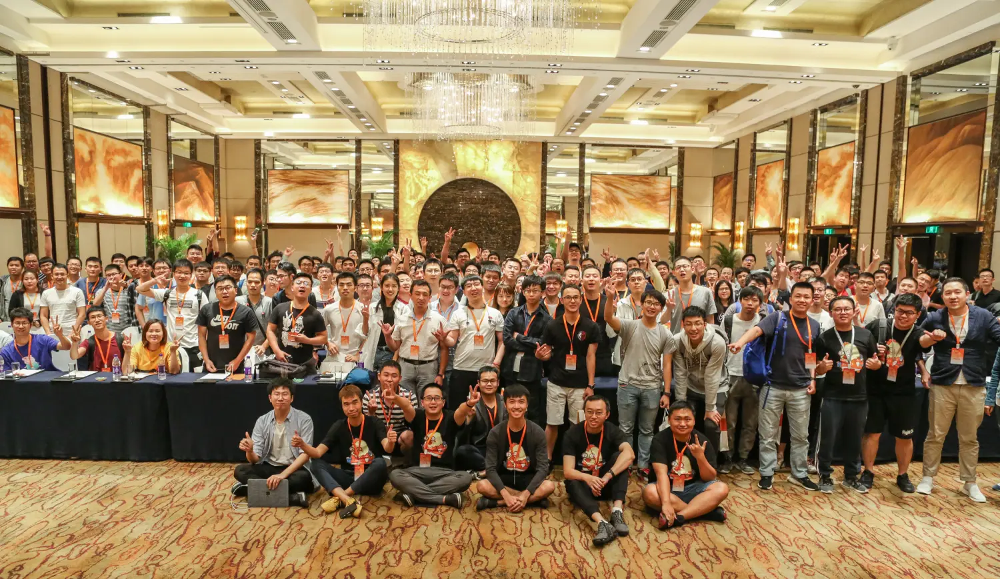

< INPUT / A DEVELOPER'S PRACTICE OUTPUT / SHARED KNOWLEDGE >
RUNTIME / CONVERSATION
发生在开发者之间。
T Salon 不是两侧的符号，而是符号打开之后，人与实践真正相遇的空间。
01 / INPUT
一个人真正做过的事情
02 / BETWEEN
一次没有标准答案的交流
03 / OUTPUT
可以继续流动的经验
始于 iOS 开发者社区。技术方向不断扩展，但这个“之间”从未改变。
T SALON / SINCE 2016Apple Dev Journey
AI Frontier
Embodied Intelligence
AI Frontier
Embodied Intelligence